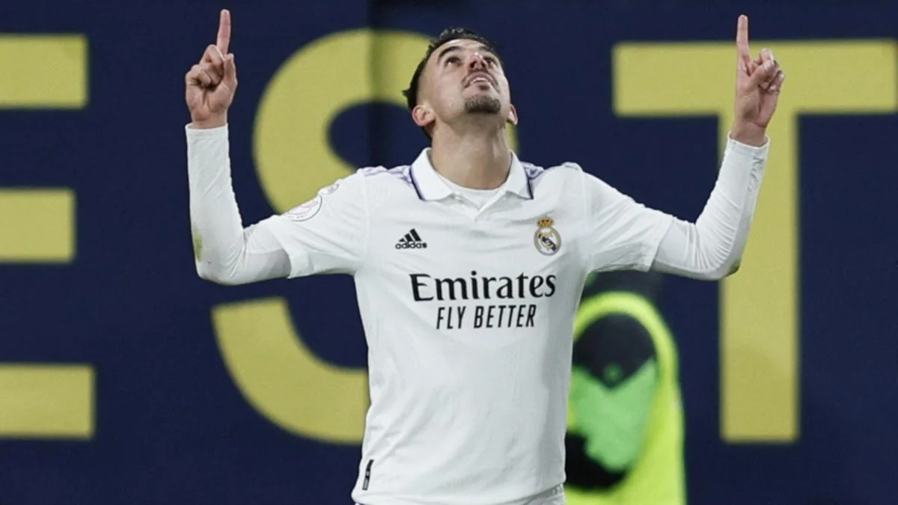
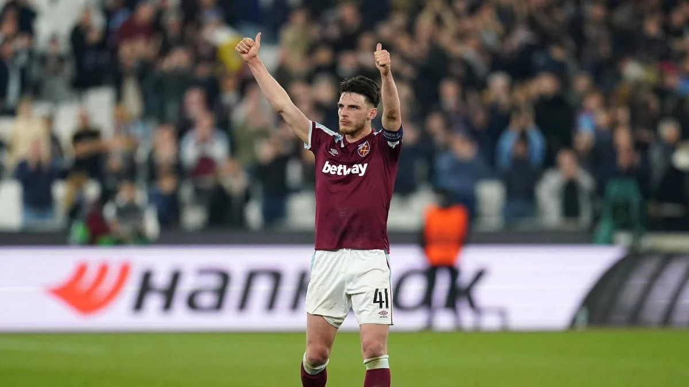

La directiva del Atlético de Madrid ha establecido nuevos contactos con Dani Ceballos, centrocampista andaluz que acaba contrato al término del curso. Aunque desea renovarle, el Real Madrid no entrará en subastas. "No he hablado con el Real Madrid sobre la renovación en toda la temporada. Hay dos meses por delante muy interesantes, estoy tranquilo. Es el momento de disfrutar de estos dos meses. Si pienso en la renovación, creo que me equivoco. Toca disfrutar del fútbol y ahora puedo dar un paso más con la selección. Es lo que toca". Hace apenas unos días, el utrerano Dani Ceballos despejó de esta forma las preguntas relacionadas con su futuro. El futbolista, de 26 años, acaba contrato con el Real Madrid al término del curso. Lógicamente, son dos los alternativas que baraja el futbolista. La primera, ampliar su compromiso con una entidad de Chamartín que desea renovarle, pero que también tiene claro que no hará más esfuerzos de lo necesarios y que, en ningún caso, entrará en subastas con otros equipos que deseen reclutarle. Además, por ahora, están centrados en el final de curso y no tienen intención de sentarse a estudiar renovaciones.
Renovar o partir
La segunda, probar fortuna lejos del Santiago Bernabéu. En este sentido, el diario Marca deja hoy claro que el jugador ya ha sido seriamente tanteado por el Atlético de Madrid. Los colchoneros, que ya establecieron los primeros contactos hace meses, han vuelto a tocar a su puerta durante las últimas semanas. "Hay que recordar que la relación entre Real Madrid y Atlético prácticamente está rota o por lo menos bajo mínimos. Por tanto, no hay obstáculo alguno que impida los movimientos hechos por el club rojiblanco", añade el rotativo. Por el momento, el centrocampista mantiene la calma. Su prioridad es ligarse a un proyecto en el que pueda resultar importante y el Real Madrid, por ahora, no le garantiza el papel que le gustaría. Por eso, parece claro que lo que ocurra durante los próximos meses resultará decisivo. Si Ceballos suma minutos y rinde al nivel deseado por todos, su continuidad será un hecho. De lo contrario, tal vez el curso que viene vista de rojiblanco.
Talentoso centrocampista del West Ham United, el internacional inglés se mantiene en la lista de la compra de los Blues. Eso sí, su precio se sitúa en la friolera de 110 M€. Son numerosas las informaciones que está protagonizando el Chelsea en relación con la confección de la plantilla de Graham Potter. Adversario del Real Madrid en los cuartos de final de la Champions, su rendimiento está siendo irregular en lo que va de campaña. De ahí que pretenda mejorar su proyecto. Desde Inglaterra apuntan que los Blues insisten con una vía para su sala de máquinas sin necesidad de salir de la Premier League. Nos referimos a Declan Rice (24 años), sensacional mediocampista que compite en las filas del West Ham United. Y es un jugador que puede agitar el mercado de fichajes.
Un ambicioso deseo de 110 M€ Con una cotización que se dispara hasta la espectacular cifra de los 110 M€, su vinculación en el Estadio Olímpico de Londres concluye a mediados de 2024. Siguiendo con la telenovela de Rice, también se ha visto tentado por otros tres colosos del entorchado británico: Manchester City, Arsenal y Manchester United. Así las cosas, los Sky Blues, los gunners y los Diablos Rojos van a presionar por un profesional que disputó el Mundial 2022 (en Catar) con The Three Lions. El West Ham de David Moyes tratará de frenar la fuga de su estrella, si bien es cierto que el Chelsea pondrá la carne en el asador para reclutar a Declan Rice.
